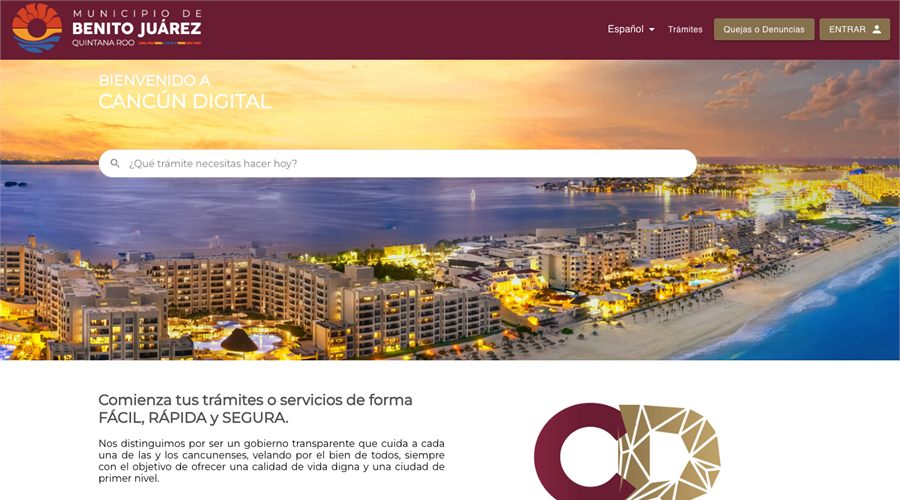

PROYECTO / 03
Ventanilla Digital
Plataforma innovadora para la creación y gestión de trámites gubernamentales en línea. Facilita el acceso a servicios públicos, reduce tiempos de espera y mejora la eficiencia en procesos administrativos.

El problema
Hacer accesibles los trámites y organizar su gestión en línea.
La solución
Una plataforma para crear y gestionar trámites gubernamentales desde un portal digital.
DEMO VISUAL ILUSTRATIVA · 18 SEGUNDOS
Mira el flujo en acción
Interfaz representativa con datos ficticios, basada en las funciones descritas del proyecto. No es una grabación del producto ni reproduce su interfaz exacta. No conecta sistemas ni realiza operaciones.
Encuentra el trámite
Consulta información y prepara tu solicitud.
Ver información →Este ejemplo no corresponde a un trámite oficial.
Prepara la información
No son requisitos oficiales.
Visualiza el seguimiento
Permiso de ejemplo
En revisión · ilustraciónNo se ha enviado ningún trámite.
Leer la descripción del recorrido
Encontrar el trámite
Trámite ficticio: solicitud de un permiso. La persona consulta el catálogo del portal.
Revisar la solicitud
Ejemplo conceptual: consultar requisitos y preparar los datos solicitados. No son requisitos oficiales.
Gestionar el proceso
Ejemplo conceptual: presentar la solicitud para revisión. Aquí no se registra ni se envía ningún trámite.
También puedes leer los tres pasos a tu ritmo.